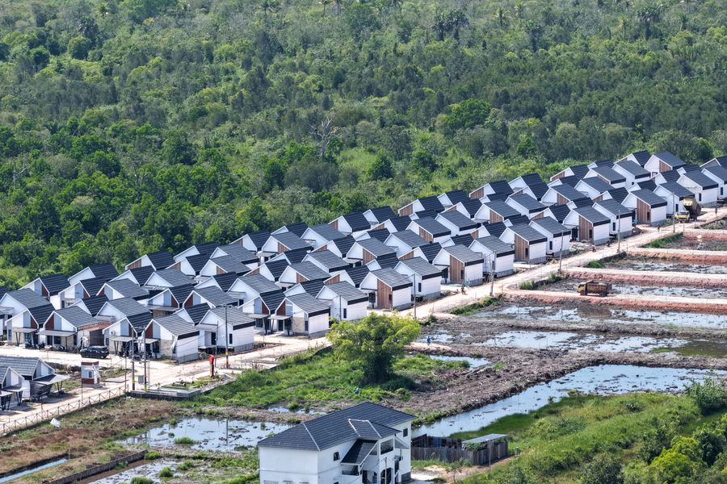
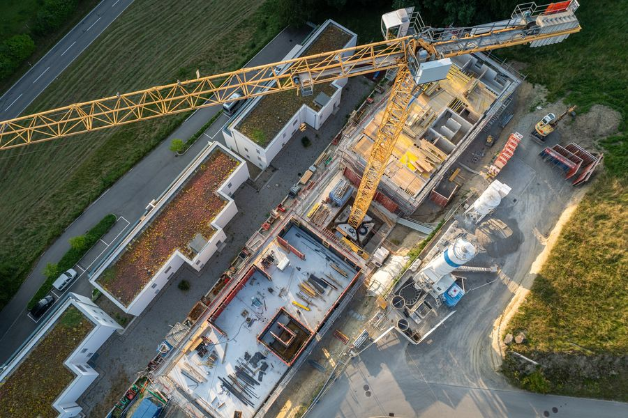

voorbeeldbeeld
Rotterdam
Een versneld proces waarin woningbouwprojecten met goedgekeurde systemen (typegoedkeuring en/of EKV op gebouwniveau) versneld een vergunning kunnen krijgen. Het omvat het voorbereidingstraject én het vergunningsproces.
Voor gemeenten is de Fast Lane een vorm van dienstverlening. Zij bestaat uit twee delen: een afwegingskader voor intern gebruik, dat laat zien welke route past bij welk bouwwerk, welke EKV-variant en welke planologische situatie, en een afsprakenkader met externe partijen, de opdrachtgever en de bouwer, over wie wat wanneer aanlevert en wanneer keuzes vastliggen. De Routekaart helpt om beide in te richten. De versnelling in de bouwtechnische toets komt uit de EKV. De versnelling in de voorbereiding komt uit vroege afspraken, freeze-momenten en een omgevingsplan dat rekening houdt met conceptueel bouwen.
Lichtblauw: winst uit vroege afspraken. Blauw: winst uit de EKV.
De EKV Fast Lane komt voort uit de Versneller Type- en Systeemgoedkeuring, onderdeel van het programma Innovatie en Opschaling Woningbouw (IOP) van het ministerie van Volkshuisvesting en Ruimtelijke Ordening, uitgevoerd door De Bouwcampus. De Versneller loopt tot medio 2027; daarna gaat de aanpak verder binnen het IOP, op weg naar landelijke toepassing.
Alle producten met versienummer. Een nieuwe versie vervangt de vorige.
Aan deze producten kunnen geen rechten worden ontleend. Ze zijn onderhevig aan voortschrijdend inzicht; feedback en inzichten uit de praktijk zijn welkom via het contactformulier.

voorbeeldbeeld
voorbeeldbeeldWe publiceren hier geen nieuwsstroom. Wat we wel doen: iedereen die zich aanmeldt op de hoogte houden van nieuwe kennisproducten, de stimuleringsregeling, praktijkvoorbeelden en veranderingen in wet- en regelgeving rond EKV en Fast Lane, zoals het Bbl, de Wkb en de TloKB.
Meld je aan voor de nieuwsbrief, dan hoor je het als er iets is.
Aanmelden